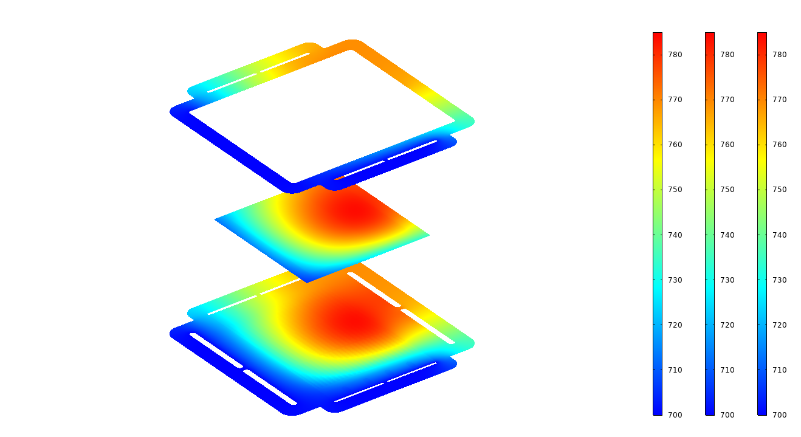

01
Multiphysics CFD for SOFC/SOEC
3D multiphysics analysis of solid oxide fuel and electrolysis cells
- High-fidelity 3D models coupling mass, momentum, energy, charge, and reaction (Ansys Fluent + UDF)
- From a single channel (1 cm x 10 cm) to commercial cells (15 x 15 cm2) and stacks (15 x 15 x 25 cm3)
- Transient thermo-electrochemical behavior under load change
- Bipolar plate and manifold design by controlling thermal and flow resistance
Temperature deviation -65%Flow deviation -60%Stack ΔT 66 -> 45 °C